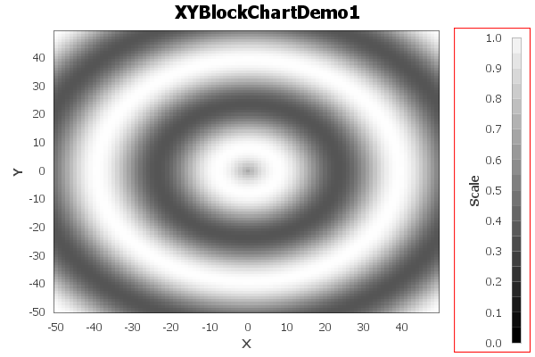

public class XYBlockRenderer extends AbstractXYItemRenderer implements XYItemRenderer, Cloneable, PublicCloneable, Serializable
XYZDataset by drawing a
color block at each (x, y) point, where the color is a function of the
z-value from the dataset. The example shown here is generated by the
XYBlockChartDemo1.java program included in the JFreeChart
demo collection:

DEFAULT_ITEM_LABEL_INSETS, DEFAULT_OUTLINE_PAINT, DEFAULT_OUTLINE_STROKE, DEFAULT_PAINT, DEFAULT_SHAPE, DEFAULT_STROKE, DEFAULT_VALUE_LABEL_FONT, DEFAULT_VALUE_LABEL_PAINT, ZERO| Constructor and Description |
|---|
XYBlockRenderer()
Creates a new
XYBlockRenderer instance with default
attributes. |
| Modifier and Type | Method and Description |
|---|---|
Object |
clone()
Returns a clone of this renderer.
|
void |
drawItem(Graphics2D g2,
XYItemRendererState state,
Rectangle2D dataArea,
PlotRenderingInfo info,
XYPlot plot,
ValueAxis domainAxis,
ValueAxis rangeAxis,
XYDataset dataset,
int series,
int item,
CrosshairState crosshairState,
int pass)
Draws the block representing the specified item.
|
boolean |
equals(Object obj)
Tests this
XYBlockRenderer for equality with an arbitrary
object. |
Range |
findDomainBounds(XYDataset dataset)
Returns the lower and upper bounds (range) of the x-values in the
specified dataset.
|
Range |
findRangeBounds(XYDataset dataset)
Returns the range of values the renderer requires to display all the
items from the specified dataset.
|
RectangleAnchor |
getBlockAnchor()
Returns the anchor point used to align a block at its (x, y) location.
|
double |
getBlockHeight()
Returns the block height, in data/axis units.
|
double |
getBlockWidth()
Returns the block width, in data/axis units.
|
PaintScale |
getPaintScale()
Returns the paint scale used by the renderer.
|
void |
setBlockAnchor(RectangleAnchor anchor)
Sets the anchor point used to align a block at its (x, y) location and
sends a
RendererChangeEvent to all registered listeners. |
void |
setBlockHeight(double height)
Sets the height of the blocks used to represent each data item and
sends a
RendererChangeEvent to all registered listeners. |
void |
setBlockWidth(double width)
Sets the width of the blocks used to represent each data item and
sends a
RendererChangeEvent to all registered listeners. |
void |
setPaintScale(PaintScale scale)
Sets the paint scale used by the renderer and sends a
RendererChangeEvent to all registered listeners. |
addAnnotation, addAnnotation, addEntity, annotationChanged, beginElementGroup, calculateDomainMarkerTextAnchorPoint, drawAnnotations, drawDomainLine, drawDomainMarker, drawItemLabel, drawRangeLine, drawRangeMarker, fillDomainGridBand, fillRangeGridBand, findDomainBounds, findRangeBounds, getAnnotations, getDefaultItemLabelGenerator, getDefaultToolTipGenerator, getDrawingSupplier, getItemLabelGenerator, getLegendItem, getLegendItemLabelGenerator, getLegendItems, getLegendItemToolTipGenerator, getLegendItemURLGenerator, getPassCount, getPlot, getSeriesItemLabelGenerator, getSeriesToolTipGenerator, getToolTipGenerator, getURLGenerator, hashCode, initialise, lineTo, moveTo, removeAnnotation, removeAnnotations, setDefaultItemLabelGenerator, setDefaultToolTipGenerator, setLegendItemLabelGenerator, setLegendItemToolTipGenerator, setLegendItemURLGenerator, setPlot, setSeriesItemLabelGenerator, setSeriesToolTipGenerator, setURLGenerator, updateCrosshairValuesaddChangeListener, beginElementGroup, calculateLabelAnchorPoint, clearLegendShapes, clearLegendTextFonts, clearLegendTextPaints, clearSeriesFillPaints, clearSeriesItemLabelFonts, clearSeriesItemLabelPaints, clearSeriesItemLabelsVisible, clearSeriesOutlinePaints, clearSeriesOutlineStrokes, clearSeriesPaints, clearSeriesPositiveItemLabelPositions, clearSeriesShapes, clearSeriesStrokes, clearSeriesVisible, clearSeriesVisibleInLegend, endElementGroup, fireChangeEvent, getAutoPopulateSeriesFillPaint, getAutoPopulateSeriesOutlinePaint, getAutoPopulateSeriesOutlineStroke, getAutoPopulateSeriesPaint, getAutoPopulateSeriesShape, getAutoPopulateSeriesStroke, getDataBoundsIncludesVisibleSeriesOnly, getDefaultCreateEntities, getDefaultEntityRadius, getDefaultFillPaint, getDefaultItemLabelFont, getDefaultItemLabelPaint, getDefaultItemLabelsVisible, getDefaultLegendShape, getDefaultLegendTextFont, getDefaultLegendTextPaint, getDefaultNegativeItemLabelPosition, getDefaultOutlinePaint, getDefaultOutlineStroke, getDefaultPaint, getDefaultPositiveItemLabelPosition, getDefaultSeriesVisible, getDefaultSeriesVisibleInLegend, getDefaultShape, getDefaultStroke, getItemCreateEntity, getItemFillPaint, getItemLabelAnchorOffset, getItemLabelFont, getItemLabelInsets, getItemLabelPaint, getItemOutlinePaint, getItemOutlineStroke, getItemPaint, getItemShape, getItemStroke, getItemVisible, getLegendShape, getLegendTextFont, getLegendTextPaint, getNegativeItemLabelPosition, getPositiveItemLabelPosition, getSeriesCreateEntities, getSeriesFillPaint, getSeriesItemLabelFont, getSeriesItemLabelPaint, getSeriesNegativeItemLabelPosition, getSeriesOutlinePaint, getSeriesOutlineStroke, getSeriesPaint, getSeriesPositiveItemLabelPosition, getSeriesShape, getSeriesStroke, getSeriesVisible, getSeriesVisibleInLegend, getTreatLegendShapeAsLine, hasListener, isComputeItemLabelContrastColor, isItemLabelVisible, isSeriesItemLabelsVisible, isSeriesVisible, isSeriesVisibleInLegend, lookupLegendShape, lookupLegendTextFont, lookupLegendTextPaint, lookupSeriesFillPaint, lookupSeriesOutlinePaint, lookupSeriesOutlineStroke, lookupSeriesPaint, lookupSeriesShape, lookupSeriesStroke, notifyListeners, removeChangeListener, setAutoPopulateSeriesFillPaint, setAutoPopulateSeriesOutlinePaint, setAutoPopulateSeriesOutlineStroke, setAutoPopulateSeriesPaint, setAutoPopulateSeriesShape, setAutoPopulateSeriesStroke, setComputeItemLabelContrastColor, setDataBoundsIncludesVisibleSeriesOnly, setDefaultCreateEntities, setDefaultCreateEntities, setDefaultEntityRadius, setDefaultFillPaint, setDefaultFillPaint, setDefaultItemLabelFont, setDefaultItemLabelFont, setDefaultItemLabelPaint, setDefaultItemLabelPaint, setDefaultItemLabelsVisible, setDefaultItemLabelsVisible, setDefaultLegendShape, setDefaultLegendTextFont, setDefaultLegendTextPaint, setDefaultNegativeItemLabelPosition, setDefaultNegativeItemLabelPosition, setDefaultOutlinePaint, setDefaultOutlinePaint, setDefaultOutlineStroke, setDefaultOutlineStroke, setDefaultPaint, setDefaultPaint, setDefaultPositiveItemLabelPosition, setDefaultPositiveItemLabelPosition, setDefaultSeriesVisible, setDefaultSeriesVisible, setDefaultSeriesVisibleInLegend, setDefaultSeriesVisibleInLegend, setDefaultShape, setDefaultShape, setDefaultStroke, setDefaultStroke, setItemLabelAnchorOffset, setItemLabelInsets, setLegendShape, setLegendTextFont, setLegendTextPaint, setSeriesCreateEntities, setSeriesCreateEntities, setSeriesFillPaint, setSeriesFillPaint, setSeriesItemLabelFont, setSeriesItemLabelFont, setSeriesItemLabelPaint, setSeriesItemLabelPaint, setSeriesItemLabelsVisible, setSeriesItemLabelsVisible, setSeriesItemLabelsVisible, setSeriesNegativeItemLabelPosition, setSeriesNegativeItemLabelPosition, setSeriesOutlinePaint, setSeriesOutlinePaint, setSeriesOutlineStroke, setSeriesOutlineStroke, setSeriesPaint, setSeriesPaint, setSeriesPositiveItemLabelPosition, setSeriesPositiveItemLabelPosition, setSeriesShape, setSeriesShape, setSeriesStroke, setSeriesStroke, setSeriesVisible, setSeriesVisible, setSeriesVisibleInLegend, setSeriesVisibleInLegend, setTreatLegendShapeAsLinefinalize, getClass, notify, notifyAll, toString, wait, wait, waitaddAnnotation, addAnnotation, addChangeListener, drawAnnotations, drawDomainLine, drawDomainMarker, drawRangeLine, drawRangeMarker, fillDomainGridBand, fillRangeGridBand, getAnnotations, getDefaultCreateEntities, getDefaultFillPaint, getDefaultItemLabelFont, getDefaultItemLabelGenerator, getDefaultItemLabelPaint, getDefaultItemLabelsVisible, getDefaultNegativeItemLabelPosition, getDefaultOutlinePaint, getDefaultOutlineStroke, getDefaultPaint, getDefaultPositiveItemLabelPosition, getDefaultSeriesVisible, getDefaultSeriesVisibleInLegend, getDefaultShape, getDefaultStroke, getDefaultToolTipGenerator, getItemCreateEntity, getItemFillPaint, getItemLabelFont, getItemLabelGenerator, getItemLabelPaint, getItemOutlinePaint, getItemOutlineStroke, getItemPaint, getItemShape, getItemStroke, getItemVisible, getLegendItem, getLegendItemLabelGenerator, getNegativeItemLabelPosition, getPassCount, getPlot, getPositiveItemLabelPosition, getSeriesCreateEntities, getSeriesFillPaint, getSeriesItemLabelFont, getSeriesItemLabelGenerator, getSeriesItemLabelPaint, getSeriesNegativeItemLabelPosition, getSeriesOutlinePaint, getSeriesOutlineStroke, getSeriesPaint, getSeriesPositiveItemLabelPosition, getSeriesShape, getSeriesStroke, getSeriesToolTipGenerator, getSeriesVisible, getSeriesVisibleInLegend, getToolTipGenerator, getURLGenerator, initialise, isItemLabelVisible, isSeriesItemLabelsVisible, isSeriesVisible, isSeriesVisibleInLegend, removeAnnotation, removeAnnotations, removeChangeListener, setDefaultCreateEntities, setDefaultCreateEntities, setDefaultFillPaint, setDefaultFillPaint, setDefaultItemLabelFont, setDefaultItemLabelGenerator, setDefaultItemLabelPaint, setDefaultItemLabelsVisible, setDefaultItemLabelsVisible, setDefaultNegativeItemLabelPosition, setDefaultNegativeItemLabelPosition, setDefaultOutlinePaint, setDefaultOutlinePaint, setDefaultOutlineStroke, setDefaultOutlineStroke, setDefaultPaint, setDefaultPaint, setDefaultPositiveItemLabelPosition, setDefaultPositiveItemLabelPosition, setDefaultSeriesVisible, setDefaultSeriesVisible, setDefaultSeriesVisibleInLegend, setDefaultSeriesVisibleInLegend, setDefaultShape, setDefaultShape, setDefaultStroke, setDefaultStroke, setDefaultToolTipGenerator, setLegendItemLabelGenerator, setPlot, setSeriesCreateEntities, setSeriesCreateEntities, setSeriesFillPaint, setSeriesFillPaint, setSeriesItemLabelFont, setSeriesItemLabelGenerator, setSeriesItemLabelPaint, setSeriesItemLabelsVisible, setSeriesItemLabelsVisible, setSeriesItemLabelsVisible, setSeriesNegativeItemLabelPosition, setSeriesNegativeItemLabelPosition, setSeriesOutlinePaint, setSeriesOutlinePaint, setSeriesOutlineStroke, setSeriesOutlineStroke, setSeriesPaint, setSeriesPaint, setSeriesPositiveItemLabelPosition, setSeriesPositiveItemLabelPosition, setSeriesShape, setSeriesShape, setSeriesStroke, setSeriesStroke, setSeriesToolTipGenerator, setSeriesVisible, setSeriesVisible, setSeriesVisibleInLegend, setSeriesVisibleInLegend, setURLGeneratorgetLegendItemspublic XYBlockRenderer()
XYBlockRenderer instance with default
attributes.public double getBlockWidth()
setBlockWidth(double)public void setBlockWidth(double width)
RendererChangeEvent to all registered listeners.width - the new width, in data/axis units (must be > 0.0).getBlockWidth()public double getBlockHeight()
setBlockHeight(double)public void setBlockHeight(double height)
RendererChangeEvent to all registered listeners.height - the new height, in data/axis units (must be > 0.0).getBlockHeight()public RectangleAnchor getBlockAnchor()
RectangleAnchor.CENTER.null).setBlockAnchor(RectangleAnchor)public void setBlockAnchor(RectangleAnchor anchor)
RendererChangeEvent to all registered listeners.anchor - the anchor.getBlockAnchor()public PaintScale getPaintScale()
null).setPaintScale(PaintScale)public void setPaintScale(PaintScale scale)
RendererChangeEvent to all registered listeners.scale - the scale (null not permitted).getPaintScale()public Range findDomainBounds(XYDataset dataset)
findDomainBounds in interface XYItemRendererfindDomainBounds in class AbstractXYItemRendererdataset - the dataset (null permitted).null if the dataset is null
or empty).findRangeBounds(XYDataset)public Range findRangeBounds(XYDataset dataset)
findRangeBounds in interface XYItemRendererfindRangeBounds in class AbstractXYItemRendererdataset - the dataset (null permitted).null if the dataset is null
or empty).findDomainBounds(XYDataset)public void drawItem(Graphics2D g2, XYItemRendererState state, Rectangle2D dataArea, PlotRenderingInfo info, XYPlot plot, ValueAxis domainAxis, ValueAxis rangeAxis, XYDataset dataset, int series, int item, CrosshairState crosshairState, int pass)
drawItem in interface XYItemRendererg2 - the graphics device.state - the state.dataArea - the data area.info - the plot rendering info.plot - the plot.domainAxis - the x-axis.rangeAxis - the y-axis.dataset - the dataset.series - the series index.item - the item index.crosshairState - the crosshair state.pass - the pass index.public boolean equals(Object obj)
XYBlockRenderer for equality with an arbitrary
object. This method returns true if and only if:
obj is an instance of XYBlockRenderer (not
null);obj has the same field values as this
XYBlockRenderer;equals in class AbstractXYItemRendererobj - the object (null permitted).public Object clone() throws CloneNotSupportedException
clone in interface PublicCloneableclone in class AbstractXYItemRendererCloneNotSupportedException - if there is a problem creating the
clone.Copyright © 2001–2025 JFree.org. All rights reserved.